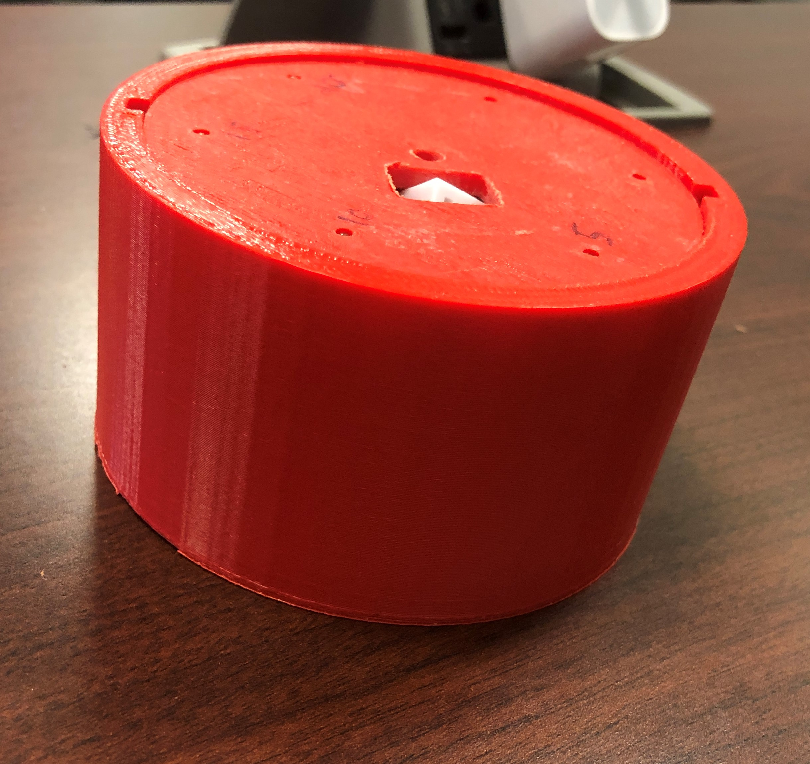
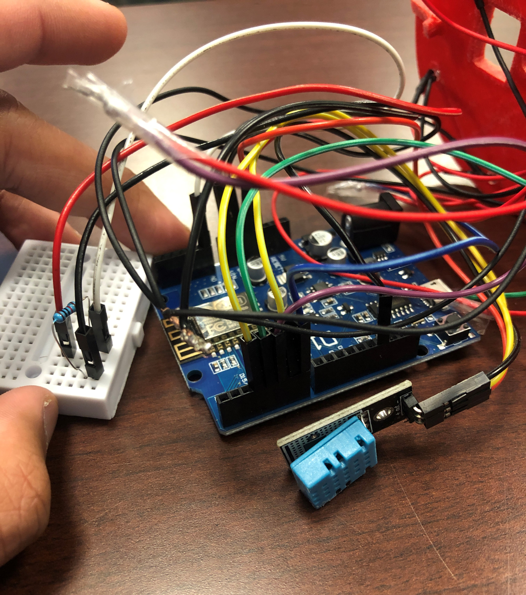

.Weather_Clock()
#Project's main focus was on recording and displaying information
/*This device is capable of recording the temperature, humidity, and light intensity.*/
/*It was created using the appropriate sensors required to detect such data, and the processor utilized was an Arduino Nano.
Its operation time on a single charge was greater than 5 days */
/*The device also featured a number of LEDS on its head
This displayed the temperature which can only be decoded using a custom decoder sheet*/
/*It also is capable of sending charted data to a server as it has wifi capabilites*/